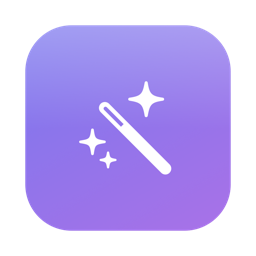

One source of truth for your AI agent skills — across every tool, on every machine.
Works with Claude Code · Cursor · Codex · OpenCode · Gemini CLI · Kiro
Free & open source (MIT) · macOS 14+ · auto-updates built in · first launch: right-click → Open
All skills live in a single git repo. Each tool's skill directory becomes symlinks into it — edit once, every tool sees it instantly.
A dashboard of every skill: summary, which tools have it, where it came from, and how often you actually use it.
Skills installed from GitHub keep their provenance. SkillHub spots upstream changes and updates without clobbering your local edits. The app updates itself too (Sparkle).
If a tool's copy diverges from the store, you get a badge and a one-click repair. Every change is backed up first.
The store is a plain git repo. Push it to GitHub, clone on another Mac, run adopt — done.
A local API plus a generated meta-skill means any model can ask SkillHub for your current skills — no stale listings.
# one canonical store, symlinked everywhere ~/ai-skills/skills/<name>/SKILL.md ← the only copy ~/.claude/skills/<name> → symlink ~/.cursor/skills/<name> → symlink ~/.codex/skills/<name> → symlink ~/.config/opencode/skills/… → symlink ~/.gemini/skills/<name> → symlink ~/.kiro/skills/<name> → symlink
# any model, any tool — the skillhub meta-skill teaches them this: $ curl -s http://127.0.0.1:4477/skills { "skills": [ { "name": "animate", "tools": ["claude","cursor","codex"], … } ] } $ curl -s http://127.0.0.1:4477/skills/animate { "name": "animate", "skillMd": "---\nname: animate\n…", "files": [ … ] }
$ SkillHub status Catalog: 66 skills (migrated: true) claude: 34 linked · cursor: 13 linked · codex: 13 linked · … $ SkillHub updates clerk-setup: update available (upstream 04ce29fb4b) $ SkillHub update clerk-setup Updated clerk-setup to 04ce29fb4b.